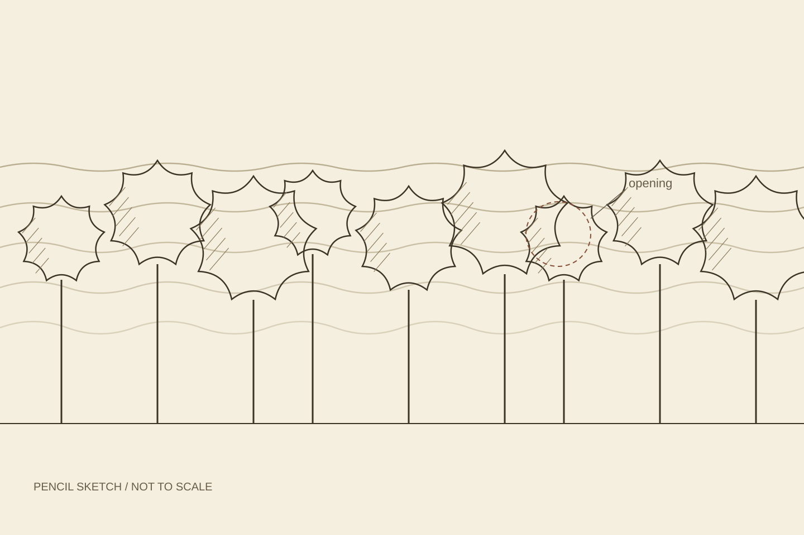
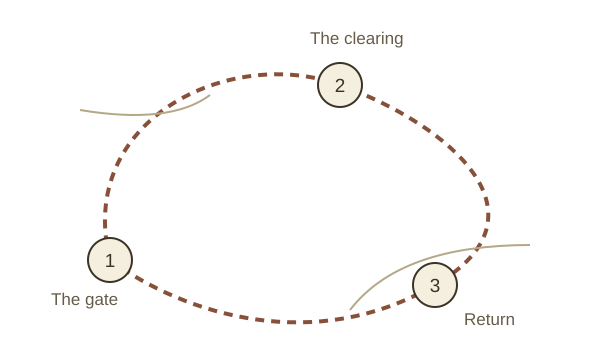

NOTEBOOK 02 / FRAGMENT 07
Off the
main path.
Notes from a morning walk on 20 May,
written in the margins of a pencil sketch.
20 MAY / MORNINGTHREE STOPS / A SCHEMATIC LOOP

Pencil sketch of an invented path.THE OBSERVATION
The best stop was
a gap in the trees.
At the clearing there was a narrow opening in the trees, a patch of warmer light and nothing to do but look.
Most travel notes are written afterwards. These were written at each stop: what caught the eye, what changed and what was left unfinished.
Not every useful direction
has to point somewhere new.
FROM THE BACK OF THE NOTEBOOK
A loop of three stops,
about two hours long.
- The gate: begin with a question.
- The clearing: stop for ten minutes.
- Return: write down one thing you saw.
Follow the diary entries ↗
Schematic / not to scale